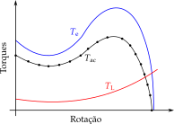

\(T_{\rm{ac}}(\omega_{\rm{mec}})\) vem da subtração das curvas de torque eletromagnético e de carga — expressá-la analiticamente (e integrar sua inversa) raramente é trivial.
Método dos Intervalos (Torque Médio)
Divide-se a curva de aceleração em intervalos, usando um torque médio \(\overline{T}_{\rm{ac},i}\) em cada um:

Fig. 1: Divisão em intervalos da curva de aceleração.
Mamede Filho recomenda incrementos de 10% da velocidade síncrona, exceto onde o torque varia acentuadamente.
Exemplo: Tempo de Aceleração pelo Método dos Intervalos
Acionamento com \(J=0{,}5\) kg.m², velocidade de operação \(\omega_{\rm{op}}=180\) rad/s, dividida em 5 intervalos iguais. Torque de aceleração (\(T_e - T_L\)) em cada ponto:
A diferença entre os dois métodos é pequena (menos de 1% neste intervalo) — por isso, na prática, o método do torque médio simples costuma ser suficiente, reservando-se o torque efetivo para os casos em que se busca maior precisão.
Método Simplificado (Torque Médio Único)
Na prática, um único valor médio para todo o acionamento é suficiente:
N/H: uma média simples seria \(0{,}5(T_{\rm{e,p}}+T_{\rm{e,max}})\). O coeficiente real (0,45) é menor porque, entre a partida e o torque máximo, a curva desses motores passa por um torque mínimo (\(T_{\rm{min}}\)) — a curva “afunda” no meio do caminho antes de subir até \(T_{\rm{max}}\). Isso puxa a média real (pela área sob a curva) para baixo da média ingênua dos dois extremos.
D: motores de categoria D têm curva de torque decrescente da partida até a operação, sem esse afundamento pronunciado — por isso a aproximação usa só \(T_{\rm{e,p}}\) (nem precisa de \(T_{\rm{e,max}}\)), escalado por 0,6.
Exemplo: Torque Médio Eletromagnético
Motor categoria N com \(T_{\rm{e,p}} = 180\) N.m e \(T_{\rm{e,max}} = 220\) N.m. Compare com um motor categoria D de mesmo \(T_{\rm{e,p}}' = 160\) N.m:
Na ligação estrela-triângulo, o enrolamento vê \(1/\sqrt{3} \approx 57{,}7\%\) da tensão de linha durante a partida. Para o motor N/H do exemplo anterior (\(T_{\rm{e,p}}=180\), \(T_{\rm{e,max}}=220\) N.m):
k = Vred/Vnom = 0.5774
T_e_bar com partida estrela = 57.191 N.m
T_e_bar em tensao plena = 180.0 N.m
A partida estrela-triângulo reduz o torque médio eletromagnético disponível para menos de um terço do valor em tensão plena — por isso ela só é viável quando a carga tem baixo torque de partida.
Torque Médio de Carga
Com \(\beta\) dependendo da natureza da carga (0: constante, 1: linear, 2: quadrática — Seção anterior):
Para torque inverso à rotação, o valor médio é problemático (inspeção visual/computacional); para torque não uniforme, é particular a cada aplicação; para cargas sem torque, é nulo.
Exemplo: Torque Médio de Carga
Carga com torque linear com a rotação (\(\beta=1\)), \(T_{\rm{L,p}} = 30\) N.m na partida e \(T_{\rm{L,op}} = 90\) N.m no ponto de operação:
Exemplo: Tempo de Aceleração Simplificado e Limite de Rotor Bloqueado
Com \(\overline{T}_{\rm{e}} = 180\) N.m, \(\overline{T}_{\rm{L}} = 60\) N.m, \(J=0{,}5\) kg.m², \(\omega_{\rm{op}}=180\) rad/s, e tempo de rotor bloqueado do fabricante \(t_{\rm{rb,max}}=12\) s:
Fig. 3: Potência mecânica a partir do torque e da velocidade angular.
Potência de Pico vs. Potência Eficaz
Selecionar pelo pico (≈ 42 kW / 57 cv) garante a reprodução da forma de onda, mas superdimensiona o motor. Como o motor suporta sobrecarga limitada, uma potência nominal menor pode bastar — desde que calculada pela potência eficaz (mesmas perdas/elevação de temperatura que a potência cíclica variável):
Motores autoventilados esfriam pior parados. Com tempo de repouso \(t_{\rm{r}}\) e \(k_{\rm{v}}\) (1: ventilação independente do funcionamento — 3: ventilação vinculada ao funcionamento):
Com repouso, \(P_{\rm{ef}}\)cai de 19,6 kW para 18,8 kW: o mesmo trabalho térmico fica distribuído em um ciclo de tempo total maior, permitindo (a princípio) um motor comercial menor. O fator \(k_{\rm{v}}=3\) já penaliza esse ganho — motores autoventilados (TEFC) esfriam pouco parados, então o repouso conta menos como “tempo de resfriamento” do que contaria para um motor com ventilação forçada (\(k_{\rm{v}}=1\)).
Redução de Potência: Partidas, Frenagens e Reversões
Perdas Joule na partida/frenagem/reversão elevam a temperatura. Lobosco e Dias: uma frenagem equivale a 3 partidas; uma reversão elétrica, a 4 partidas.
Mesmo com apenas 4 partidas por hora, o fator \(\alpha_{\rm{pfr}}\) reduz a potência disponível para cerca de 76% da nominal — o efeito cresce rapidamente com \(N_p\), \(t_{\rm{ac}}\) e, principalmente, com o quadrado da relação \(I_p/I_{\rm{nom}}\).
Redução por Ambiente Atípico
Norma exige potência nominal sem sobreaquecimento até 1000 m de altitude e 40 °C. Acima disso, o ar rarefeito piora o arrefecimento:
alpha_pfr =0.7581# do exemplo de partidas sucessivasalpha_amb =0.94# do exemplo de correcao ambientalPnom =50.0Pdisp_total = alpha_pfr * alpha_amb * Pnomprintln("P_disp,total = ", round(Pdisp_total, digits=2), " cv")
P_disp,total = 35.63 cv
Exemplo do Texto: Necessidade de Trocar o Motor
Se a potência disponível calculada ficar abaixo da demandada pela carga, sobe-se para o próximo motor comercial. Do texto original: “um motor de 40 cv aciona sem problemas uma carga de 35 cv; contudo, se a potência disponível for de 30 cv, então é necessário selecionar um motor de 50 cv.”
Código
Pnom_txt, Pcarga_txt, Pdisp_txt =40.0, 35.0, 30.0println("Motor de 40 cv atende carga de 35 cv sem reducao? ", Pnom_txt >= Pcarga_txt)println("Com reducao a P_disp=30 cv, ainda atende a carga de 35 cv? ", Pdisp_txt >= Pcarga_txt)println(Pdisp_txt < Pcarga_txt ? "-> Necessario subir para o proximo motor comercial (50 cv)":"-> OK")
Motor de 40 cv atende carga de 35 cv sem reducao? true
Com reducao a P_disp=30 cv, ainda atende a carga de 35 cv? false
-> Necessario subir para o proximo motor comercial (50 cv)
Fator de Serviço
Se a disponibilidade ficar ligeiramente abaixo da carga, uma alternativa a subir de potência é usar um motor de mesma potência com fator de serviço (F.S.) > 1, tipicamente F.S. = 1,15.
Isso permite carga contínua de até 115% da potência nominal, sob condições especificadas — não confundir com a capacidade de sobrecarga momentânea (que dura apenas alguns minutos).
Especificação de Grandezas Elétricas: Tensão
A máquina deve ser compatível com a tensão da rede. Conforme os terminais disponíveis:
6 terminais: triângulo (220 V) ou estrela (380 V);
9 terminais (meio-enrolamento acessível): paralelo (220 V) ou série (440 V);
O resultado (≈ 381 V) explica por que motores de 220/380 V são tão comuns no Brasil: o mesmo enrolamento de 220 V, ligado em estrela, já fornece a tensão de linha padrão de 380 V da rede trifásica.
Frequência
Padrão brasileiro: 60 Hz. Abaixo da frequência nominal, reduz-se a tensão linearmente para manter o fluxo constante (evita saturação e sobrecorrente de magnetização):
Corrente nominal em plena carga; se ficar consistentemente acima, motor subdimensionado; se ficar em 1/2 a 1/3 da nominal, superdimensionado.
Na partida direta: 6 a 9 vezes\(I_{\rm{nom}}\). A norma limita a potência aparente com rotor bloqueado, em relação à potência nominal:
\(P_{\rm{n}}\) (kW)
\(S_{\rm{p}}/P_{\rm{n}}\) máx. (kVA/kW)
\(\leq 0{,}40\)
22
\(6{,}3 < P_{\rm{n}} \leq 25\)
12
\(63 < P_{\rm{n}} \leq 630\)
10
\(630 < P_{\rm{n}} \leq 1600\)
9
Exemplo: Limite de Corrente de Partida
Motor com \(P_n = 10\) kW (faixa \(6{,}3 < P_n \leq 25\) kW \(\Rightarrow S_p/P_n \leq 12\) kVA/kW):
Código
Pn =10.0# kWSpPn_max =12.0# kVA/kW, da tabelaSp_max = SpPn_max * Pnprintln("S_p maximo com rotor bloqueado = ", Sp_max, " kVA")
S_p maximo com rotor bloqueado = 120.0 kVA
Exemplo: Sobrecorrente Ocasional
Motores com \(P_{\rm{nom}} \leq 315\) kW e \(V_{\rm{nom}} \leq 1\) kV devem suportar \(1{,}5\,I_{\rm{nom}}\) por pelo menos 2 minutos. Para \(I_{\rm{nom}} = 20\) A:
A mais comum é a B3D: montagem horizontal, motor com pés, eixo à direita (olhando para a caixa de ligação).
Tolerância dos Parâmetros
A NBR 17094 permite os seguintes desvios entre valor declarado e medido:
Grandeza
Tolerância
Rendimento (\(\eta \geq 0{,}851\))
\(-0{,}2\,(1-\eta)\)
Rendimento (\(\eta < 0{,}851\))
\(-0{,}15\,(1-\eta)\)
Fator de potência
entre \(-0{,}02\) e \(-0{,}07\)
Escorregamento (\(P_{\rm{nom}} \geq 1\) kW)
\(\pm 20\%\)
Corrente de partida
\(+20\%\)
Torque de partida / mínimo
\(-15\%\)
Torque máximo
\(-10\%\) (mas \(\geq 1{,}5\,T_{\rm{nom}}\))
Momento de inércia
\(\pm 10\%\)
Exemplo: Tolerância de Rendimento
Motor com rendimento declarado \(\eta = 90\%\) (\(\eta \geq 0{,}851 \Rightarrow\) tolerância \(-0{,}2(1-\eta)\)):
Código
eta =0.90delta_eta =-0.2* (1- eta)eta_min = eta + delta_etaprintln("Tolerancia = ", round(delta_eta, digits=4))println("Rendimento medido deve ser >= ", round(eta_min, digits=4), " (", round(eta_min*100,digits=2), "%)")
Tolerancia = -0.02
Rendimento medido deve ser >= 0.88 (88.0%)
Aspectos Econômicos
Especificação deve ser numérica e objetiva — evitar termos subjetivos como “baixas perdas” ou “elevado torque de partida”;
Especificações mais genéricas (um tipo de motor para instalação diversa) são, paradoxalmente, mais difíceis de elaborar que uma aplicação específica;
Custos totais: aquisição + energia (dominante ao longo da vida útil) + manutenção (preventiva e corretiva);
Projeções de custo devem considerar a vida útil de todo o acionamento, não só do motor.
Referências
No material original, esta seção cita principalmente:
LOBOSCO, O. S.; DIAS, J. L. P. C. (1988);
AUGUSTO JÚNIOR, C. (2005);
MAMEDE FILHO, J. (2017);
WEG — Guia de Especificação de Motores Elétricos (2021).
Exercícios
Exercício 1
Um acionamento tem \(J=0{,}8\) kg.m², \(\omega_{\rm{op}}=150\) rad/s, dividido em 3 intervalos: \(\omega=[0, 75, 150]\) rad/s com \(T_{\rm{ac}}=[100, 70, 50]\) N.m. Calcule \(t_{\rm{ac}}\) pelo método dos intervalos.
Um motor de \(P_{\rm{nom}}=25\) cv opera com \(N_p=6\) partidas/hora, \(t_{\rm{ac}}=5\) s e \(I_p/I_{\rm{nom}}=6\). Calcule a potência disponível \(P_{\rm{disp,pfr}}\).
Explique por que um motor autoventilado (TEFC) é uma má escolha para operar continuamente em baixas velocidades.
Porque o ventilador está acoplado ao próprio eixo — em baixa velocidade, o ventilador gira devagar e a vazão de ar cai proporcionalmente, prejudicando a dissipação de calor justamente quando o motor mais precisa de refrigeração. A alternativa é usar ventilação forçada (TEFV), com fonte de ar independente da rotação do motor.
Exercício 7
Um motor tem rendimento declarado \(\eta=80\%\) (abaixo de 0,851, tolerância \(-0{,}15(1-\eta)\)). Qual o rendimento mínimo aceitável medido?
Código
eta =0.80delta_eta =-0.15*(1-eta)eta_min = eta + delta_etaprintln("Tolerancia = ", round(delta_eta, digits=4))println("Rendimento medido deve ser >= ", round(eta_min, digits=4))
Tolerancia = -0.03
Rendimento medido deve ser >= 0.77
Exercício 8
Por que a especificação técnica de um motor não deve conter termos como “baixas perdas” ou “operação livre de falha”?
Porque são termos subjetivos, sem valor numérico verificável — não permitem ao fabricante saber exatamente o que deve ser entregue, nem ao comprador verificar se o produto atende à especificação. Uma boa especificação comunica de forma clara e numérica o que precisa ser alcançado, não como alcançá-lo.